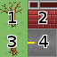

Manejo de imágenes
En los videojuegos 2D las imágenes suelen estar en formatos gráficos como png o jpg ya diseñados con anterioridad.
En pilas se pueden cargar estos recursos usando
el módulo imagenes. Por ejemplo, si tenemos una
imagen llamada hola.png podríamos incorporarla a
nuestro juego así:
import pilas
hola = pilas.imagenes.cargar('hola.png')
Las imágenes no se imprimen directamente en pantalla, en su lugar tienes que crear un Actor y asignarle la imagen.
Por ejemplo, el siguiente código muestra la imagen en pantalla:
imagen = pilas.imagenes.cargar("mi_personaje.png")
actor = pilas.actores.Actor(imagen)
otra opción similar es crear al actor, y luego asignarle la imagen:
imagen = pilas.imagenes.cargar("mi_personaje.png")
actor = pilas.actores.Actor()
actor.imagen = imagen
Cualquiera de las dos opciones produce el mismo resultado, personaje "cambiará" de apariencia cuando se le asigne una nueva imagen.
Imágenes de fondo
Muchas veces queremos que las imágenes cubran el fondo de pantalla completamente, como si se tratara de un fondo o papel tapiz.
Si la imagen es suficientemente gránde para cubrir la pantalla, podemos cargarla como una imagen normal y luego crear un fondo que la represente:
fondo = pilas.fondos.Fondo()
fondo.imagen = pilas.imagenes.cargar('mi_fondo.png')
Ahora, si en realidad queremos que el fondo se dibuje como si fuera un
mozaico (o papel tapiz), tenemos que indicarle a la imagen que se re-dibuje
muchas veces hasta cubrir el fondo de pantalla. El código es muy similar
al anterior, solo que ahora usamos las propiedades repetir_horizontal y
repetir_vertical
fondo = pilas.fondos.Fondo()
fondo.imagen = pilas.imagenes.cargar('mi_fondo.png')
fondo.imagen.repetir_vertical = True
fondo.imagen.repetir_horizontal = True
Grillas de imágenes
Un forma conveniente de almacenar las imágenes de tus personajes es usar una grilla.
La siguiente imagen es una grilla de 10 columnas que utilizamos para crear al personaje "pingu":

Internamente la imagen se almacena así, pero a la hora de mostrarse en pantalla se puede seleccionar el cuadro.
Este es un ejemplo que carga la grilla de mas arriba y genera un actor para mostrar el cuadro 1:
actor = pilas.actores.Actor()
grilla = pilas.imagenes.cargar_grilla("pingu.png", 10)
actor.imagen = grilla
Ten en cuenta que el último argumento de la función pilas.imagenes.cargar_grilla es la cantidad de columnas que
tiene la grilla. También es posible usar funciones
que tengan filas y columnas, solo tendrías que indicar un
argumento mas con el número de filas. Lo veremos mas adelante.
Puedes ejecutar la siguiente sentencia para ver la documentación completa de esta función:
help(pilas.imagenes.cargar_grilla)
Reproduciendo animaciones
Tener una grilla de imagenes es una buena forma de comenzar a realizar animaciones.
Si quieres tomar una grilla y mostrar una y otra vez sus cuadros podrías usar el actor Animación.
El siguiente código genera un actor que mostrará uno a uno los cuadros de la grilla:
grilla = pilas.imagenes.cargar_grilla("explosion.png", 7)
p = pilas.actores.Animacion(grilla, True)
El actor Animacion, también puede recibir cómo argumento
la velocidad con la que tiene que reproducir la animación (medida
en cuadros por segundo).
El segundo argumento indica que la animación tiene que ser cíclica (nunca termina).
Observa este ejemplo, muestra la misma animación de antes pero mostrando un cuadro por segundo y se elimina cuando termina:
grilla = pilas.imagenes.cargar_grilla("explosion.png", 7)
p = pilas.actores.Animacion(grilla, False, velocidad=1)
Animaciones controladas a mano con una grilla
Otra forma de hacer animaciones, es asociar una grilla directamente a un actor y cambiar el cuadro a mostrar.
Por ejemplo, la siguiente sentencia avanza al siguiente cuadro de animación en la grilla. Recuerda que comienza en 1:
grilla.avanzar()
actor.imagen = grilla
Ten en cuenta que el método avanzar va a retornar True o False.
True significa que la grilla ha avanzado y ha mostrado un cuadro nuevo.
False significa que la grilla volvió a mostrar el primer cuadro.
Este valor de retorno es muy útil a la hora de saber si una animación terminó, y poder tomar alguna decisión al respecto.
Grillas con filas y columnas
En el ejemplo anterior mencioné que las grillas pueden tener filas y columnas. Esto se logra gracias a que python permite tener funciones y métodos con argumentos opcionales.
En este caso, la función cargar_grilla también
puede recibir la cantidad de filas que tiene una grilla:
animacion = pilas.imagenes.cargar_grilla("grilla.png", 2, 2)
el primer número 2 indica que la grilla tiene dos
columnas y el segudo 2 indica que la grilla tiene dos
filas.
Cuando usas una grilla con pilas y columnas, la función avanzar
que vimos antes va a recorriendo los cuadros de la misma
manera en que se lee una historieta (de izquierda
a derecha y de arriba a abajo).
Esta es la apariencia de la imágen que usamos antes y los números indican el órden con que pilas leerá los cuadros:

Haciendo animaciones sencillas
En muchas oportunidades nos interesa hacer animaciones simples y que se repitan todo el tiempo sin mucho esfuerzo.
Con lo que vimos hasta ahora, hacer esas animación
es cuestión de cargar una grilla y llamar cada
un determinado tiempo a la función avanzar.
Pero como esta es una tarea muy común, en pilas hay una forma mas sencilla de hacer esto.
Existe un actor llamado Animación que tiene la
capacidad de mostrar una animación cíclica, es decir,
que se repita todo el tiempo, comenzando desde el principio
cuando llega al final.
Veamos un ejemplo, esta imagen tiene 6 cuadros de animación
ordenados en columnas:

Una forma sencilla de convertir esta animación en un actor
simple es crear la grilla, construir un actor Animacion e
indicarle a pilas que será una animación cíclica, es decir, que
se tendrá que repetir indefinidamente:
grilla = pilas.imagenes.cargar_grilla("fuego.png", 6)
actor = pilas.actores.Animacion(grilla, ciclica=True)
El resultado en la ventana será una animación de fuego que no terminará nunca. Cuando el actor termine de mostrar el cuadro 6 de la animación regresará al primero para comenzar nuevamente.
Otra posibilidad es especificar el argumento ciclica=False. En
ese caso el actor comenzará a mostrar la animación desde el cuadro
1 y cuanto termine eliminará al actor de la ventana. Esto es útil
para hacer efectos especiales, como explosiones o destellos, cosas
que quieres tener en la ventana un instante de tiempo y nada mas...
Haciendo actores con animación
Puede que quieras hacer un actor que tenga múltiples animaciones, y que las muestre en determinados momentos. Por ejemplo, si tienes una nave con motores, es probable que quieras mostrar una animación de motores en funcionamiento cuando la nave avanza y detener la animación de motores cuando finaliza el movimiento.
Una forma de lograr esto de manera sencilla es crear tu propio actor, y que este tenga dos atributos, uno para cada animación:
class MiNave(pilas.actores.Actor):
def __init__(self, x=0, y=0):
Actor.__init__(self, x=x, y=y)
self.animacion_detenida = pilas.imagenes.cargar_grilla("nave_detenida.png", 1)
self.animacion_movimiento = pilas.imagenes.cargar_grilla("nave_en_movimiento.png", 3)
Luego, en el método actualizar del propio actor podrías
avanzar la animación actual y permitirle al programador invocar
métodos para intercambiar animaciones:
class MiNave(pilas.actores.Actor):
# [...] codigo anterior
def poner_en_movimiento(self):
self.imagen = self.animacion_movimiento
def poner_en_reposo(self):
self.imagen = self.animacion_detenida
def actualizar(self):
self.imagen.avanzar()
Como puedes ver, el concepto inicial es el mismo, cuando
queremos cambiar de animación tenemos que cambiar de grilla, y
cuando queremos avanzar la animación solamente tenemos que
llamar al método avanzar.